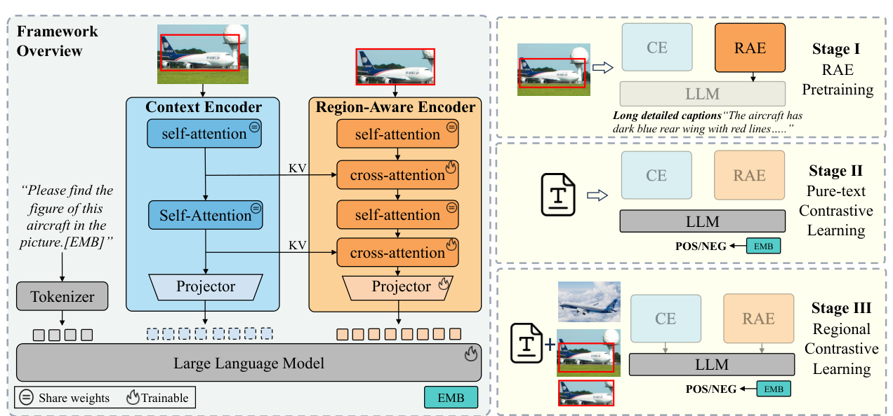
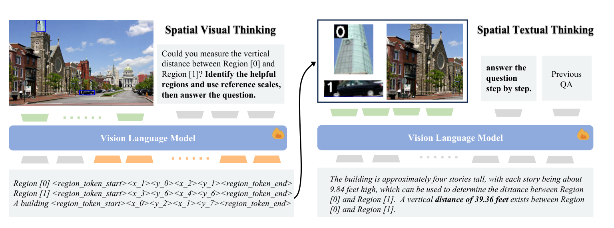
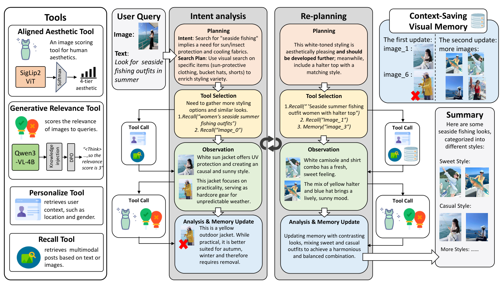
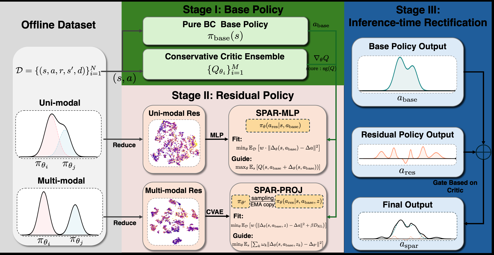
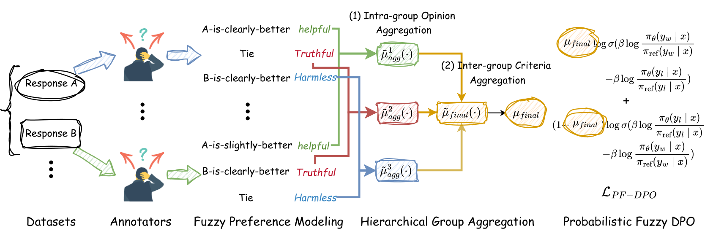
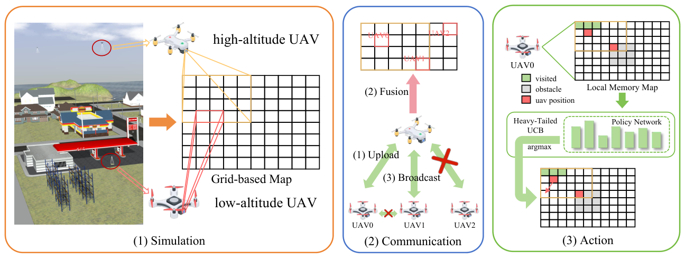

Xun Liang (梁洵)
Ph.D. Candidate, Computer Science and Technology, State Key Lab of CAD&CG, Zhejiang University
B.Eng., Computer Science and Technology, Chu Kochen Honors College, Zhejiang University
Biography
I am a Ph.D. student in the State Key Lab of CAD&CG at Zhejiang University, advised by Deng Cai. I received my bachelor's degree in Computer Science and Technology from Chu Kochen Honors College, Zhejiang University.
My research interests include large language models, representation learning, and imitation reinforcement learning, with a recent focus on coding agent post-training and autoresearch. Please do not hesitate to reach out to me via email at xunliang@zju.edu.cn!
Experiences

Selected Publications





